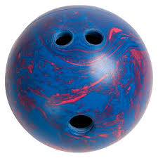

HookingHow much curve your ball’s path makes upon release. A ball with a large hook curves a lot, while a ball with a little hook is essentially thrown straight
a bowling ball can seriously improve your game. It all has to do with the angle at which it approaches the pins. A straight angle is much less likely to naturally
carryA ball’s ability to knock down pins based on its path
pins than a hook. If you want to get into bowling as a hobby, it is definitely worth it to learn how to hook the ball.
Getting the Appropriate Equipment

Image SourceBowling Ball - The average bowling ball you’ll see in a bowling alley is not very
reactiveReactive balls react more when you rotate them on release.
It is very difficult to hook a non reactive ball. This means that it is very difficult to create much spin using any of these balls.
Just about any ball should work to start as most balls are designed to create at least some hook. It is important to get this ball custom drilled.
A custom drilled ball is much easier to handle than a ball you’ll find at a bowling alley.
If they ask, tell them you are looking to use a
conventional A style of holding the bowling ball with your whole fingers. This is opposed to a Fingertip gripone-handed gripA style of bowling where you throw a ball with one hand. This is opposed to a Two-handed grip.
It's fine if you don’t know what those mean, we’ll speak more about it in the following section.
A 14 pound ball is a nice middle ground for most beginners.
Even if 14 pound balls feel too heavy in a bowling alley, they often feel lighter when custom drilled.
Make sure not to get a ball too heavy and well fitting to prevent arm and wrist pain.
Bowling Shoes - The next most important piece of equipment are the bowling shoes.
Just get a pair that feels comfortable. These also act as an investment.
Most bowling alleys charge for rental, so after going to bowling alleys for a while, you’ll be saving yourself a pretty penny.
Towel - A towel is useful for taking the oilAll bowling alleys are filled with oil that control the natural position of the ball. Most recreational lanes use oil patterns that naturally direct the ball towards the pins off of the ball.
This isn’t too important, but it may help create a more consistent shot, and it is worth it to use the towel at least once a game.
Bowling bag - Another nice to have piece of equipment is a bowling bag.
It may be annoying to carry everything else from the car to the alley, so having a bag to keep everything in one place is nice.
Firstly, we will talk about the conventional grip. For the
conventional gripA style of holding the bowling ball with your whole fingers. This is opposed to a Fingertip grip,
you want to stick your middle and your ring finger inside of the two upper holes, and your thumb in the lower one. Spread out your pinky and your index finger on the outside of the ball to help with grip.
This is effective compared to the fingertip gripA style of holding the bowling ball with only your fingertips. This generates more revolutions, but is harder to control. Not recommended for beginners, but very popular among pros because it creates consistency and is a lot easier to learn, with the caveat of having less max
hookHow much curve your ball’s path makes upon release. A ball with a large hook curves a lot, while a ball with a little hook is essentially thrown straight.
Hold the ball comfortably, make sure not to grip the ball too hard to prevent hand pain.
Secondly, we will talk about a
one-handed gripA style of bowling where you throw a ball with one hand. This is opposed to a Two-handed grip.
This is compared to the
two-handed gripA style of bowling where you throw a ball with two hands. This is difficult and not recommended for beginners since it makes it much harder to control the ball’s path.
Similar to the reasoning for the conventional vs fingertip grip, one handed is a lot more consistent and is easier to learn. Two handed, on the other hand, is more unconventional, but generates more hook.
Four Step Approach
First align your feet with the approach dotsThe dots you see around 12 feet behind the start of the alley nearest to the lane. This helps create more consistency. For the first step, if you hold the ball with your right hand, take your first step with your right foot and vice versa. While stepping, start swinging the ball forward. For the following steps, alternate between feet for each step. By the time of your second step, your hand should be parallel to your foot.
Upon your third step, the ball should reach its maximum height. This step is considered the power stepThe third step in the four step approach, which generates most of your power and involves pushing off to help create a slide upon the final step. This step is very important as it is where most of your speed comes from. For the final step, start sliding forward and release the ball when your arm is positioned straight downward. For the release, we will touch upon that in the following step.
It is a common misconception that the arm creates most of the speed for the ball, however this is incorrect and leads to muscling Forcing the ball to move forward. This is improper technique and you should instead let gravity do most of the work the ball. You need to let gravity do most of the work on the ball. You also must keep your arm completely straight during the whole process to build consistency.
Toward the end of the 4 step approach, your hand should be positioned in front of the ball rather than on top. This is important since it gives you more control over the ball, especially its hookHow much curve your ball’s path makes upon release. A ball with a large hook curves a lot, while a ball with a little hook is essentially thrown straight. To create the hook, move your hand to the right of the ball and release. It is important to note that your wrist should not rotate during this process. This is a common mistake that leads to wrist strain. Lastly, it is important to follow through Continue moving your hand upward even after releasing the ball. This causes you to be touching the ball for longer which leads to more spin, speed, and control.
If you are throwing too far to the left or right: Try stepping in the opposite direction. Make sure to realign your feet to the approach dotsThe dots you see around 12 feet behind the start of the alley each time. This creates a more consistent approach pattern.
If your ball isn’t generating enough hook: Try decreasing your speed. It requires much more rotational force to hook a quickly moving ball. Currently, you should mainly focus on your hook. As your technique improves, you will be able to keep increasing RPM Rotations per minute (i.e. how fast the ball rotates upon release)., which will help your throw faster while maintaining a good hook.
If your ball is generating too much hook: Try increasing your speed. This is essentially the reverse of the last tip. Try adding more power into your power stepThe third step in the four step approach, which generates most of your power. Generating hook is the hard part, just try throwing smoother and with more force.
Note: If at any point you start feeling pain in your back, wrists, or arms, stop immediately. Finishing your game is not worth an injury.
Glossary
Carry - A ball’s ability to knock down pins based on its path
Hook - How much curve your ball’s path makes upon release. A ball with a large hook curves a lot, while a ball with a little hook is essentially thrown straight.
Reactive - Reactive balls react more when you rotate them on release. It is very difficult to hook a non reactive ball
One-handed grip - A style of bowling where you throw a ball with one hand. This is opposed to a Two-handed grip
Two-handed grip - A style of bowling where you throw a ball with two hands. This is difficult and not recommended for beginners since it makes it much harder to control the ball’s path
Conventional grip - A style of holding the bowling ball with your whole fingers. This is opposed to a Fingertip grip
Fingertip grip - A style of holding the bowling ball with only your fingertips. This generates more revolutions, but is harder to control. Not recommended for beginners, but very popular among pros
Oil - All bowling alleys are filled with oil that control the natural position of the ball. Most recreational lanes use oil patterns that naturally direct the ball towards the pins
Approach dots - The dots you see around 12 feet behind the start of the alley.
Power step - The third step in the four step approach, which generates most of your power.
Muscling - Forcing the ball to move forward. This is improper technique and you should instead let gravity do most of the work
Follow through - Continue moving your hand upward even after releasing the ball.
RPM - Rotations per minute (i.e. how fast the ball rotates upon release).